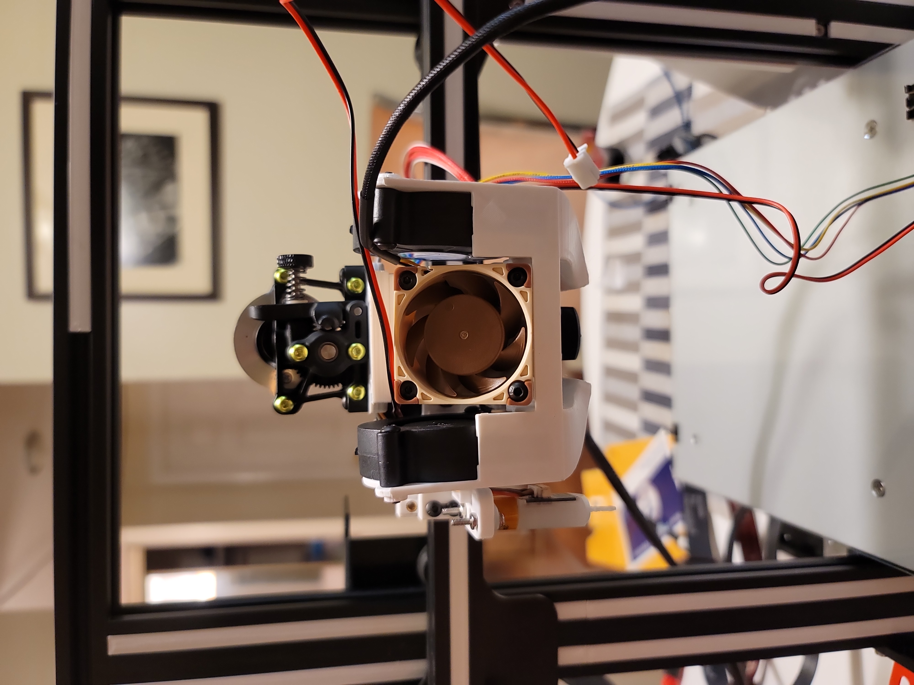

Gaggiuino and Topology Optimization
This is a project that will probably never have an end as I've been continuously modifying it since I got it. I use this printer often to create solutions to problems around my apartment. The first thing I did to it is made modifications that fix the main flaws with the stock design. After that, I started to make modifications to increase the printing quality and ease of use. Then I made some modifications to increase the print speed but not lose print quality and allow me to print more exotic materials.
The first modifications were made because I read that they were major failing points of the machine. Those are the extruder being plastic, the electronics box fan cutouts being in a location that allows the filament to easily fall into it, and the filament path. The plastic extruded was solved by purchasing an aluminum extruder, while the other problems were solved using a 3d-print.
The next major modification I made was to upgrade the main board, as the stock one used out-of-date stepper motor drivers. These out-of-date stepper motor drivers caused print quality issues and a lot of noise. This upgrade would also allow me to add more functionality as it had more ports to add a filament runout sensor or an auto bed leveling device. As well as the new board allowed me to change the firmware to Marlin, which allows a ton more functionality and better print quality.
During this period of modifications, I enjoyed using my printer for projects that arose, but there was an issue I wanted to:
The most recent modifications I've made, is to allow my printer to move faster. To do so I needed to be able to increase the flow rate that my hotend and extruder can make. So, I decided to upgrade both, as well as the cooling system. I decided to switch to a direct drive extruder, but a super lightweight one: The Sherpa mini. As for the hotend I decided to go with the Phaetus Dragonfly, as it has a bimetallic heat break and allows up to 500C printing. With the upgrade to direct drive, I had to find a new method of mounting the extruder, so to kill two birds with one stone, I decided to go with the Hero me gen 6 tool head system. This allowed me to mount larger part cooling fans, which would increase bridging and the quality of overhangs. An image of the tool head can be seen on the left and below. Once, I got all that done, I decided to change up the firmware on the printer to Klipper. I did this as it pushes all the decoding of the commands to the raspberry pi and leaves the main board of the printer to worry about just moving the device. Klipper also comes with input shaping, which allows you to print much faster without a loss of quality. Input shaping works by taking measurements of each access, using an accelerometer, and getting the resonance frequencies. The firmware can then take those frequencies can compensate, thus getting rid of ghosting effects.
I wanted to print with more engineering filaments, I needed an enclosure. I've been planning to make one but with all the upgrades I've made, I decided it was time. The benefits of an enclosure is that
The next major upgrade I would like to make is to make the Z axis belted, as I am seeing some layer inconsistencies and I believe that a belted Z axis would get rid of them. I am also thinking of adding some multi-material system to allow me to print with different colors or a combination of materials to add in flexible materials.
Gaggiuino and Topology Optimization

Refitting the IVSG Mapping Van

Forged Carbon Fiber Shift Knob
Serious collaboration or work inquiries only.